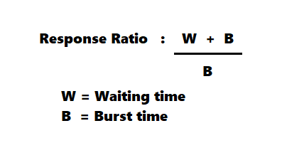

Highest Response Ration Next Scheduling Algorithm
Highest Response Ratio Next (HRNN) is one of the most optimal scheduling algorithms. This is a non-preemptive algorithm in which, the scheduling is done on the basis of an extra parameter called Response Ratio. A Response Ratio is calculated for each of the available jobs and the Job with the highest response ratio is given priority over the others.
- This page demonstrates the Highest Response Ration Next ( non-preemptive ) scheduling algorithm using JavaScript.
- Do's and Dont's
- Do not enter special characters or symbols
- Enter required input specified
- Burst times must not be zero
Process Information
| Name | Arrival Time | Burst Time |
|---|
Gantt Chart
| Process | Start Time | End Time |
|---|
Results Table
| Process | Arrival Time | Burst Time | Completion Time | Turnaround Time | Waiting Time |
|---|---|---|---|---|---|
| Average Waiting Time: | |||||
| Average Turnaround Time: | |||||